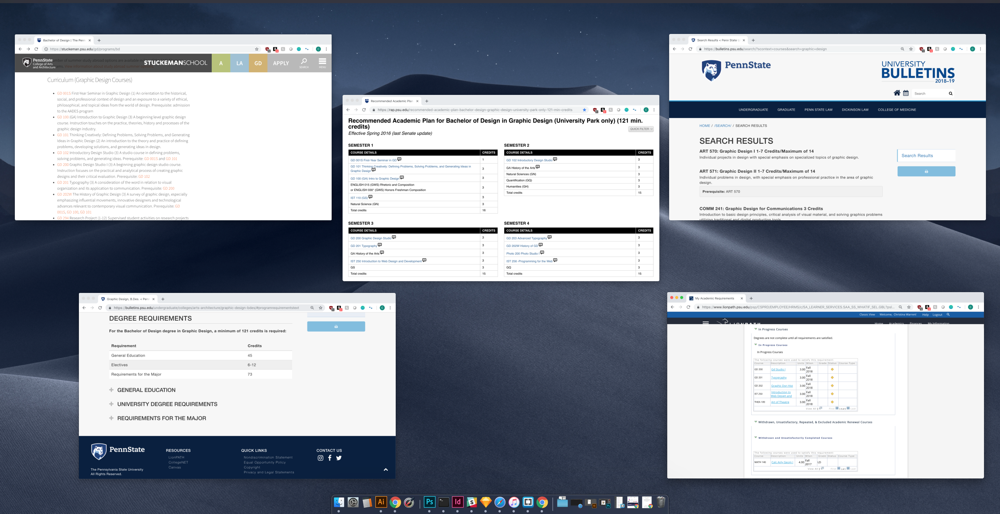
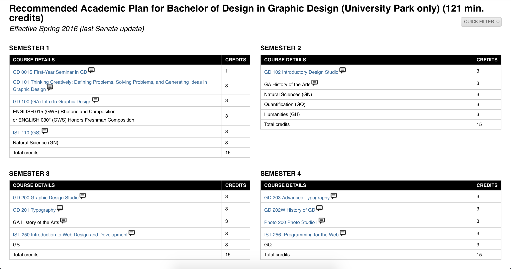
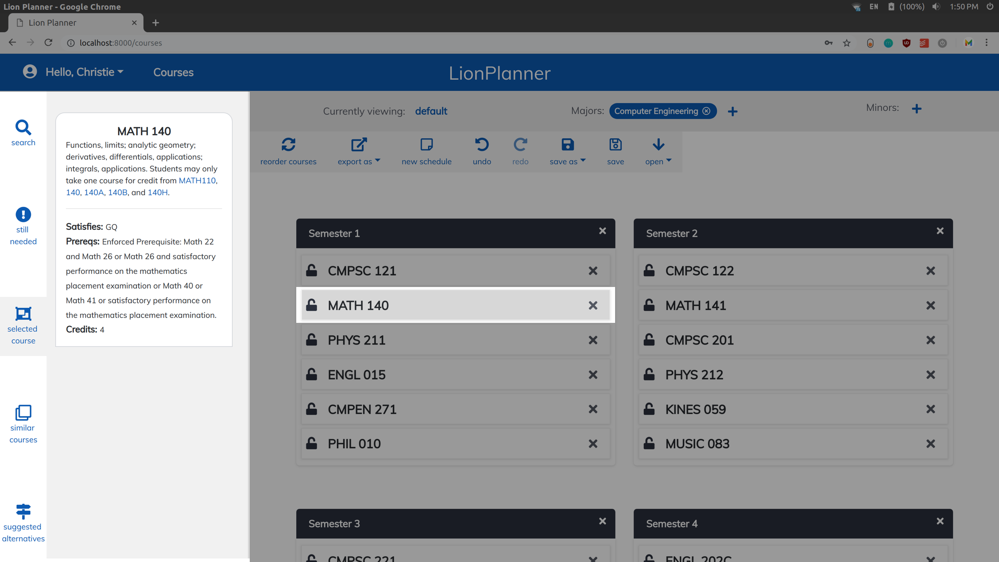
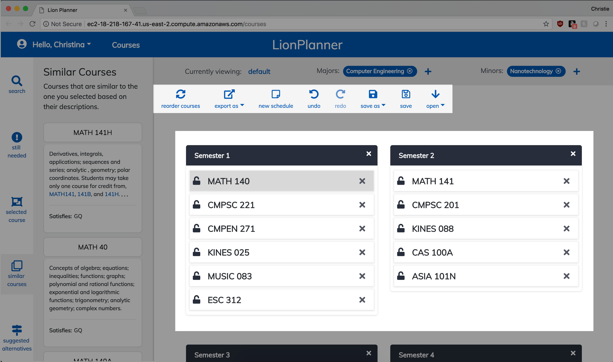

LionPlanner
Academic planning, simpler.
Role: Digital Product Designer
January 2018 - present
Our team of 5 front and backend developers and myself created LionPlanner as a part of the Penn State Nittany AI Challenge, which consisted of three phases: ideation, prototypes, and minimum viable products.
In September 2018, after developing an MVP, our team received first place and $30,000 of funding for further development.
Learn more about the Nittany AI Alliance and Challenge
An Over-Complicated Process
Academic planning is a crucial part of every college student's life. The problem is, it's just as complicated as it is crucial. This process involves many resources, often full of inconsistencies, many requirements to keep track of, and small mistakes can lead to huge obstacles.
Some of the windows I have open when trying to plan which courses to take next.
No Interactivity → A Tedious Task
The current solution is a template "recommended academic plan," which does offer some value in its suggestions for ordering courses. However, it really isn't helpful to students who don't fit the one major, four year mold, and its lack of interactivity makes accomodating any other circumstances incredibly tedious.
The recommended plan for Graphic Design. When clicked, the courses offer only that a C or better is required.
Major Pain Points:
1. too many disconnected resources
2. small mistakes → huge obstacles
3. no interactive tool
OUR SOLUTION:

Consolidation of Resources
LionPlanner includes the many resources needed for this process including course descriptions, major requirements, prerequisites, and more, all on one page.
The entire course catalog of descriptions is available, and any course's description can be viewed simply by clicking on it.
Error-Checking
We know that a major issue with the current solution is how prone it is to human error, so we implemented functionality to check that all prerequisites are being met. If not, the design makes it clear that there is an issue and even displays how to correct it.

"Still Needed" serves as a reminder of courses a user removed and hasn't fulfilled yet.
A course whose prerequisites are not being met is highlighted as shown, and when hovered over details which prereqs are missing.
Familiarity + Interactivity
I chose to take a similar approach to the recommended plans for the semester design, because I know college students don't have time to learn totally foregin software. Adding the extra information and functionality to this design is where the impact of LionPlanner really shines.
Adding interactivity to something students are familiar with gives LionPlanner a shallow learning curve, while maximizing its improvements on the current solution.
Takeaways
Creating LionPlanner has solidified my love for being the bridge between user and developer. It has emphasized to me the power user-centered software has to make an impact on real lives, and how important empathy is to developing a useful product.
I've also learned a tremendous amount about working with a team to create an actual product and then taking it to market. Being at the forefront of our team's commmunications, presentations, and pitches has given me invaluable experience in the administrative side of the company that simply does not occur in a class project.

Left to Right: Brad Zdenek (Innovation Strategist, Nittany AI Alliance), Ben Proto, Quinn Verbeke, Dylan Shoemaker, Christie Warren (me), Matt Mancini, Michael Roos, Daren Coudriet (Director & Entrepreneur in Residence, Nittany AI Alliance), Tracey DeBlase Huston (Vice President for Outreach, Penn State)

Our Q&A session with sponsors and judges after the presentation of our MVP.
The Future of LionPlanner
As we continue to develop LionPlanner, adding some more features like a degree requirement checklist, we're looking at some very exciting prospects for getting our tool into the hands of students.
We're eager to see how many students we can help with this tool, and have even already received interest from two universities.
Stay tuned for more updates on where LionPlanner takes us!